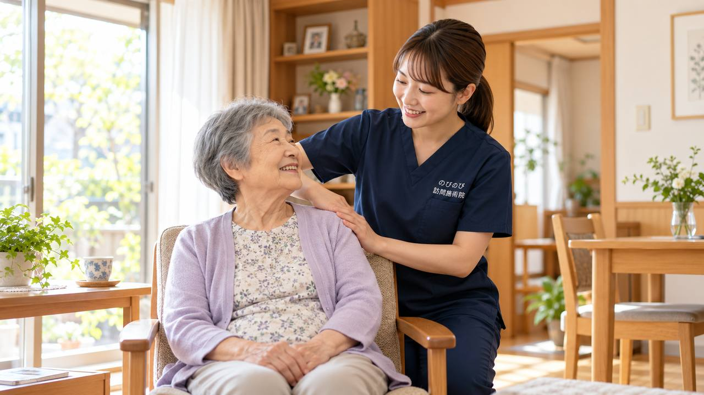

髪をとかそうと腕を上げると肩がズキッとする。上着の袖に手が通らない。夜、肩が痛んで寝返りのたびに目が覚める。尼崎市にお住まいで、そんな肩の痛みを我慢したまま、通院そのものも負担になっている方はよくいらっしゃいます。のびのび訪問施術院は尼崎市のご自宅へ伺い、肩や肩甲骨、首まわりのこわばりを和らげ、動かしやすさを保つお手伝いをします。関節の治療そのものは医療機関にお任せし、鍼灸はそれを支える補助という立場です。
かいつまんで言うと、尼崎市内のご自宅へ伺います。肩のトラブルは、痛みが強い段階と、こわばりが残る段階とで、できることが変わってきます。治療の土台は整形外科などの医療機関にあり、訪問の鍼灸はその横で支える役割になります。医師が必要と認め、かつ通院が負担な状態であれば医療保険の対象となり、1回の総額3,950円に対し1割負担でおよそ395円が目安になります。転倒後の痛みや、急に腫れる・熱を持つ・力が入らないといった変化があれば、整形外科が先です。効果には個人差があります。
ものづくりのまちで腕を使ってきたあなたへ
尼崎は昔から下町の人情とものづくりの息づくまちです。大庄や小田をはじめとする市街地で工場勤めや家業に汗を流し、家事や子育て、地域の付き合いまで、とにかく腕を動かし続けてきた世代の方が多くいらっしゃいます。そうして長年がんばってきた肩が、ある日を境に「腕が横に上がらない」「後ろに手が回らない」となってしまうのが五十肩、正式には肩関節周囲炎です。JR尼崎や立花、塚口の駅前を歩くのも、阪神尼崎や出屋敷の商店街で買い物をするのも、肩が痛むと途端に億劫になってしまいます。
「歳のせいだから」と我慢を重ねる方もめずらしくありませんが、五十肩は時期に合った対応をすることで、日々の暮らしやすさが変わってきます。通院がつらい方のために、当院ではご自宅までうかがう尼崎市の訪問鍼灸マッサージを行っています。
着替え・洗髪・エプロンの紐がつらい、そして夜間痛
五十肩でお困りの方からよく聞くのが、日常の何気ない動作のつらさです。シャツやセーターの着替え、髪を洗うために腕を上げる動き、エプロンの紐を後ろで結ぶ、背中のファスナーに手を伸ばす。こうした動作のたびに肩の奥がズキッと痛み、思わず動きを止めてしまう。これは腕を上げたり後ろに回したりする可動域が狭くなっているサインです。
とりわけ多くの方を悩ませるのが夜間痛です。阪急武庫之荘や園田あたりにも残る古い木造の家では、布団に横になって肩が下敷きになると痛みで目が覚める、寝返りのたびにうずいて眠れない、という声をよく耳にします。睡眠が削られると気力も落ちてしまいます。夜つらい肩について詳しくは五十肩・肩の痛みで腕が上がらない方へもご覧ください。
急性期・拘縮期・回復期で対応を変えます
五十肩は時期によって肩の状態が大きく変わるため、当院では画一的に同じことをするのではなく、その時々に合わせて施術を組み立てます。炎症が強く安静にしていてもうずく急性期には、無理に動かすことはせず、痛みをやわらげ夜間痛を軽くすることを優先します。痛みが少し落ち着き肩が固まってくる拘縮期には、こわばった筋肉をゆるめながら、動かせる範囲を少しずつ広げていきます。回復期には、日常の動作に必要な可動域を取り戻していくお手伝いをします。
可動域を保つための機能訓練は、その方の肩の状態に合わせて鍼灸に加えるケアとして行います。これらについて別途の料金はいただきません。ただし施術は病気そのものを治すものではなく、効き方には個人差があります。一度で劇的に、という性質のものではありませんので、時期に応じて焦らず続けていくことが大切です。
こんなときはまず整形外科へ
肩の痛みのすべてが五十肩とは限りません。転んだりぶつけたりして肩を強打したあとの痛み、腕にまったく力が入らず全然上がらない、指先や腕にしびれを伴う、といった場合は、腱板損傷など別の疾患が隠れていることもあります。こうしたときは自己判断で様子を見ず、まず整形外科を受診してください。原因をはっきりさせたうえで対応することが、遠回りに見えて確かな近道になります。
受診の結果、施術を受けるうえで気になることがあれば遠慮なくご相談ください。どこまで訪問できるかは対応エリアはどこまで来てもらえる？にまとめています。
保険と料金のことも安心して
医療保険のはり・きゅうの対象となるのは、神経痛・リウマチ・頸肩腕症候群・五十肩・腰痛症・頸椎捻挫後遺症の6疾病で、五十肩はこの中に含まれます。ご利用には医療保険の療養費と医師の同意書が必要ですが、要介護認定は不要です。介護保険の限度額とは別枠のため、介護保険と併用いただけます。なお同一部位の医療保険リハビリと鍼灸は、同じ月に同時に算定することはできません。
料金は1回の施術で総額3,950円、自己負担は1割の方で約395円が目安です。週2回で1割の方なら月約3,160円ほどです。エリア内は出張費がかからず料金は一律で、機能訓練も含みます。いずれも1回の施術の中で行うもので、追加の料金はかかりません。仕組みの詳しい説明は料金はいくら？医療保険の自己負担額と仕組みをご確認ください。
よくある質問
尼崎市にも来てもらえますか？
はい。のびのび訪問施術院は尼崎市のほぼ全域に伺います。駅からの距離にかかわらず料金は同じで、別途の出張費もかかりません。まずはお住まいと肩の困りごとをお聞かせください。
肩の痛みで保険は使えますか？
肩まわりの慢性的な痛みやこわばりについて医師が施術を必要と認め、通院がむずかしい状態であれば、はり・きゅうの医療保険の対象になることがあります。まずは整形外科などで診てもらい、医師の同意書の手続きは当院が引き受けます。
痛くて腕が上がらなくても受けられますか？
はい。炎症が強いあいだは肩そのものを動かさず、周囲のこわばりを取ることを優先します。痛みが落ち着いてきたら、痛くない範囲で動きを保つ運動を、鍼灸に加えるケアとして少しずつ組み合わせます。
夜、肩が痛くて眠れません。夜の痛みにも対応できますか？
肩まわりをゆるめめぐりを助けることで、夜間の痛みが和らいだという方がいます。寝るときに楽な姿勢やクッションの置き方もお伝えします。効果には個人差があり、痛みが強く続く場合はかかりつけの医師にもご相談ください。
1回あたりの費用を教えてください。
総額3,950円で、1割負担の方の自己負担は約395円が目安になります。月額の目安は1割の方で週2回およそ3,160円。お支払いは月ごとにまとめてで、明細をお渡しします。
介護保険を使っていても利用できますか？
はい。訪問の鍼灸は医療保険で計算し、介護保険の区分支給限度額とは別枠です。担当のケアマネジャーとも連携して進めますので、介護保険のサービスと併用していただけます。
要介護認定を受けていなくても受けられますか？
受けられます。訪問の鍼灸は医療保険のしくみなので、要介護認定の有無にかかわらず、医師の同意があれば受けられます。認定の申請中や非該当の方でも、対象になる場合があります。
家族やケアマネからの相談でも大丈夫ですか？
はい。ご本人以外の方、ご家族・ケアマネジャー・施設のご担当者からのご連絡も歓迎です。お住まいが対応エリアかどうかも含め、電話でお答えします。相談に費用はかかりません。